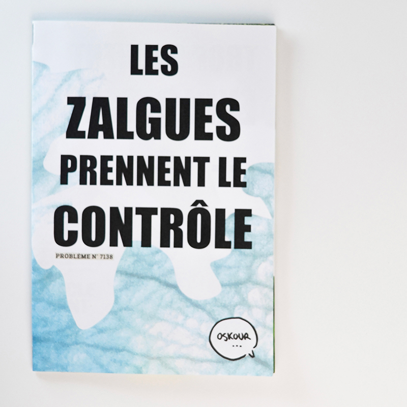
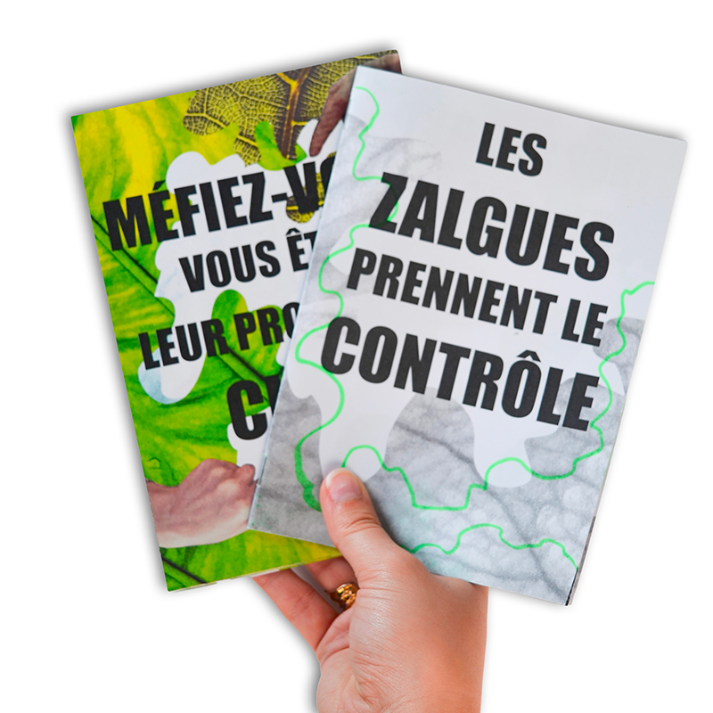
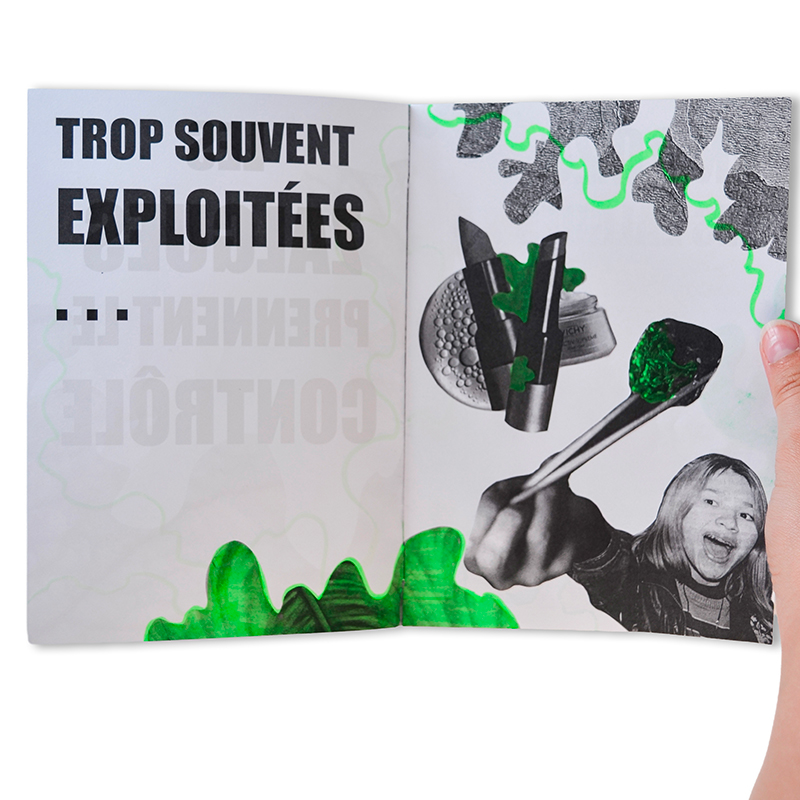
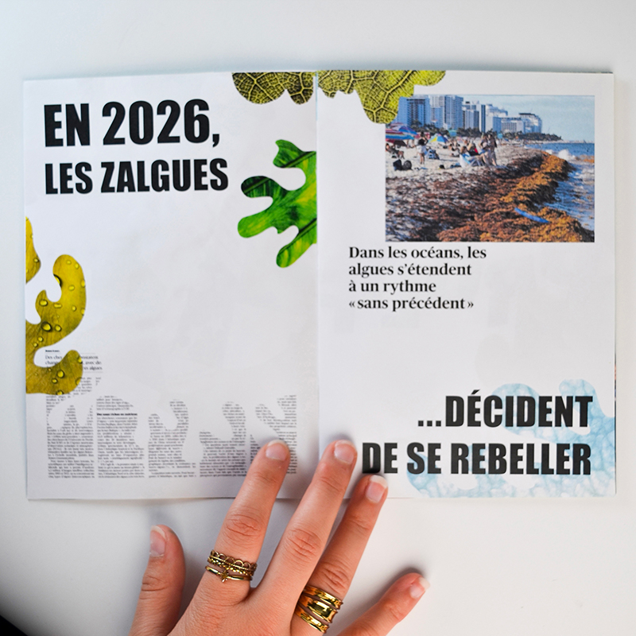
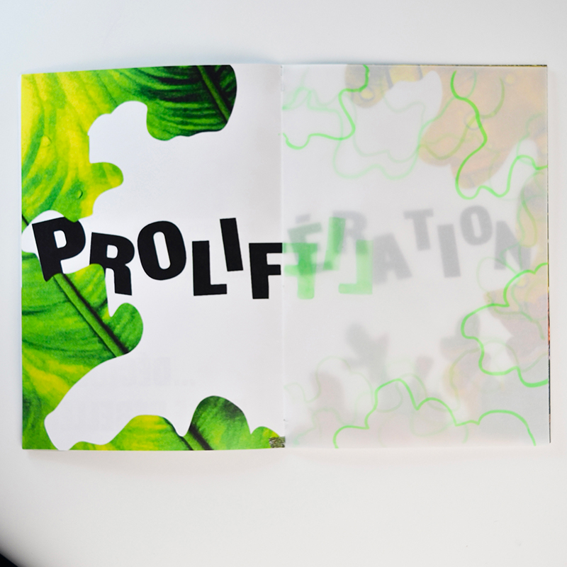
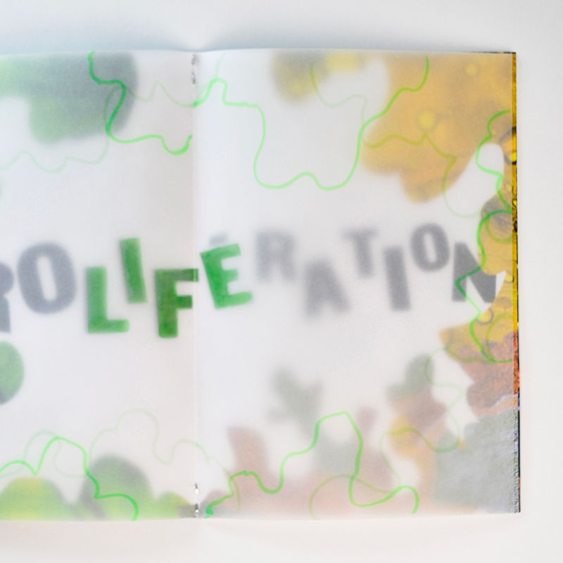
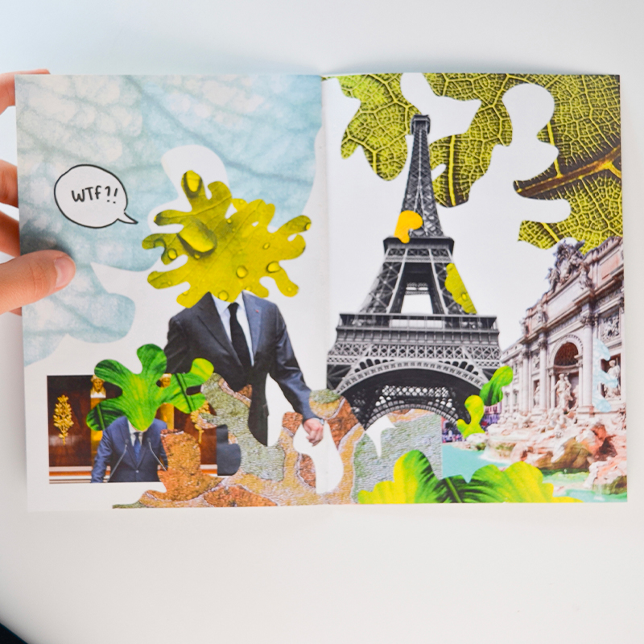
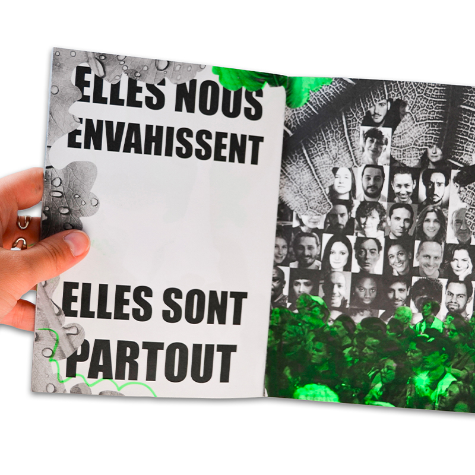
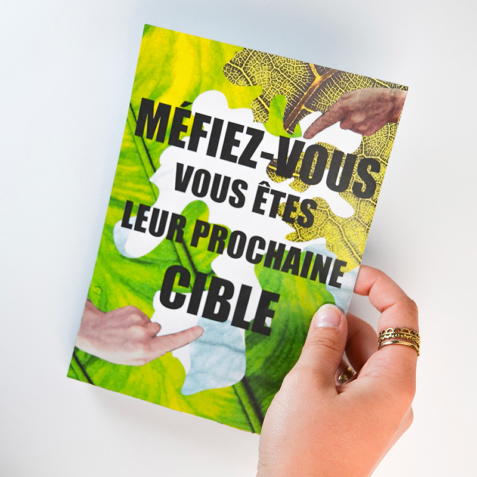
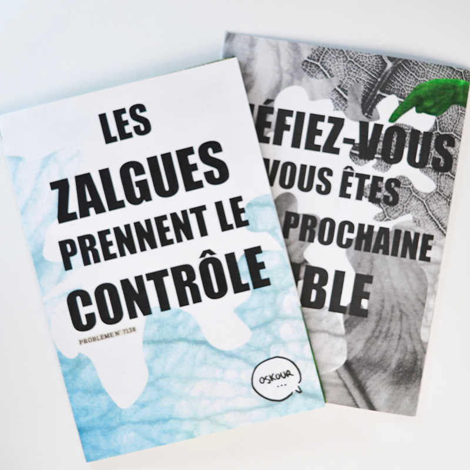

Zalgues
Édition
2026
Projet d’édition «Les Zalgues prennent le contrôle».
Zine réalisé en 2 exemplaires A5, couleurs et noir et blanc. Créer à partir d’articles de presses actuels - découpages / collages et numériquement sur Indesign. Accumulation de visuels organiques tout au long du zine et reliure agrafes.









